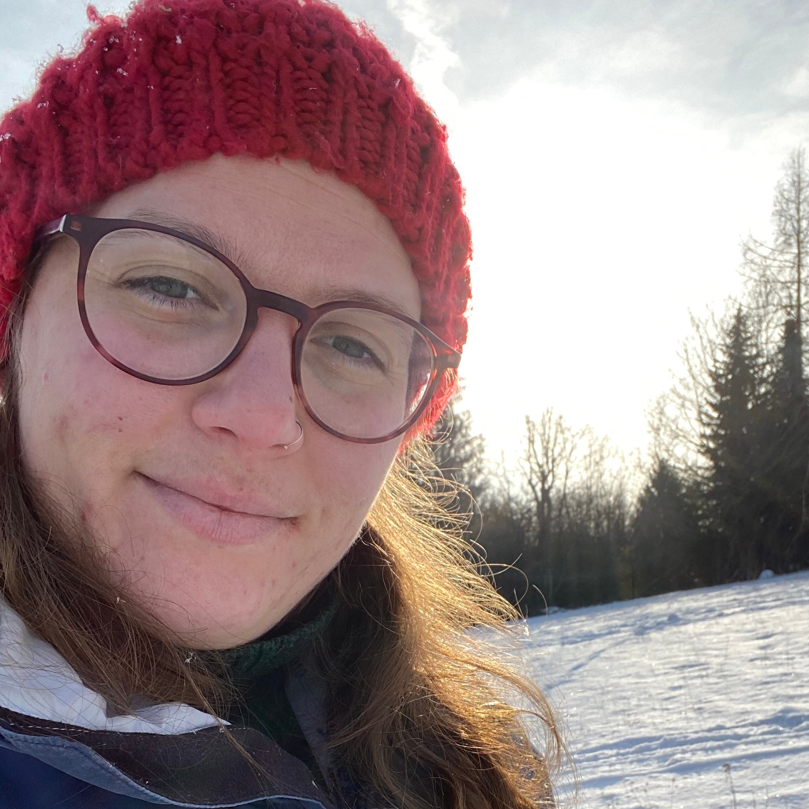
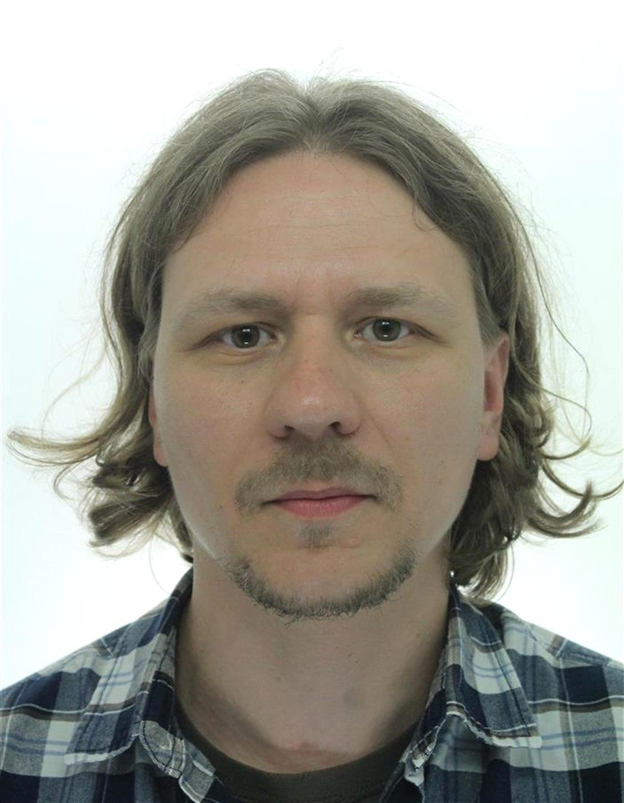
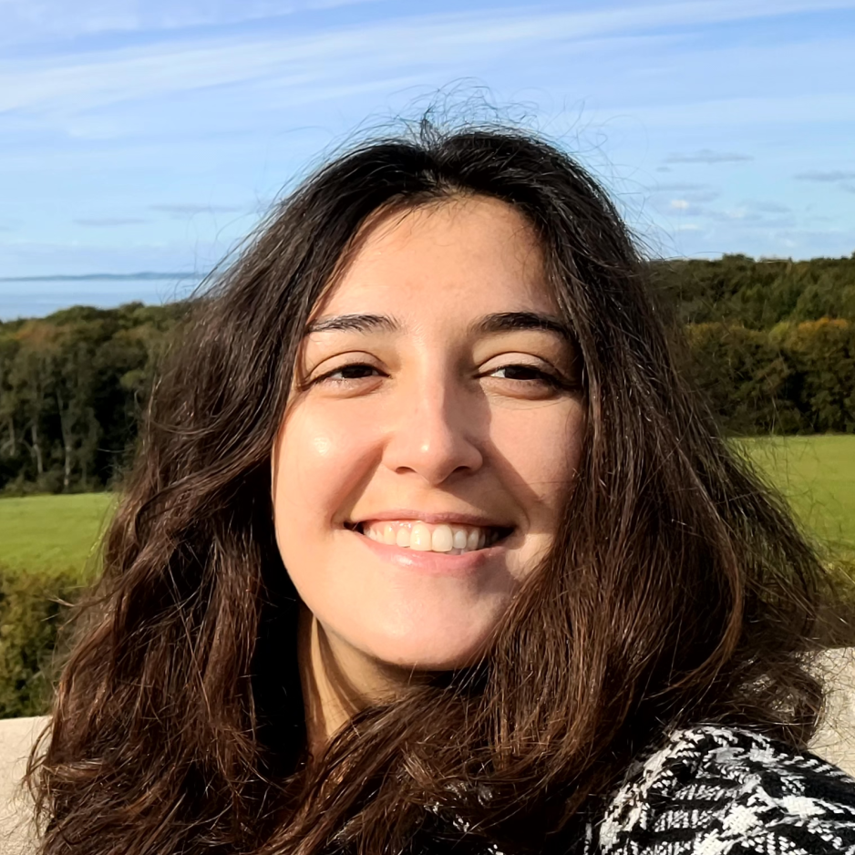
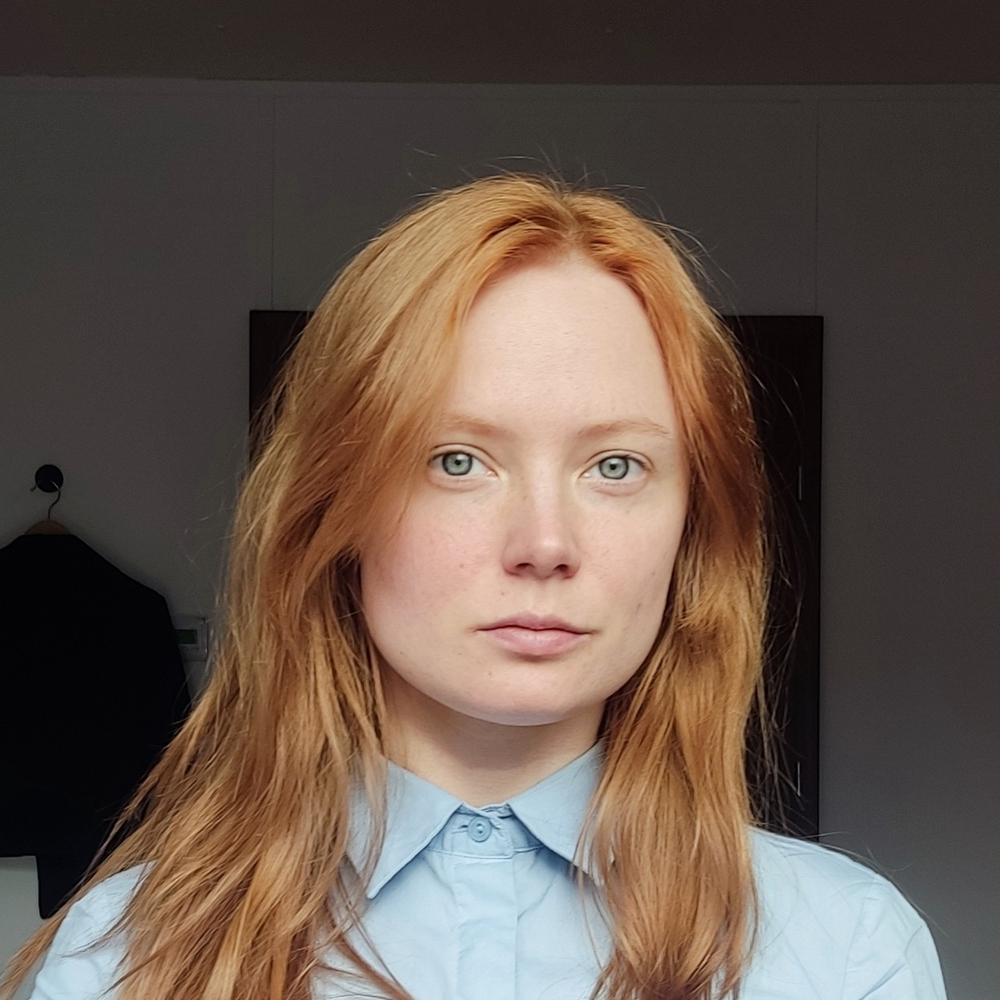
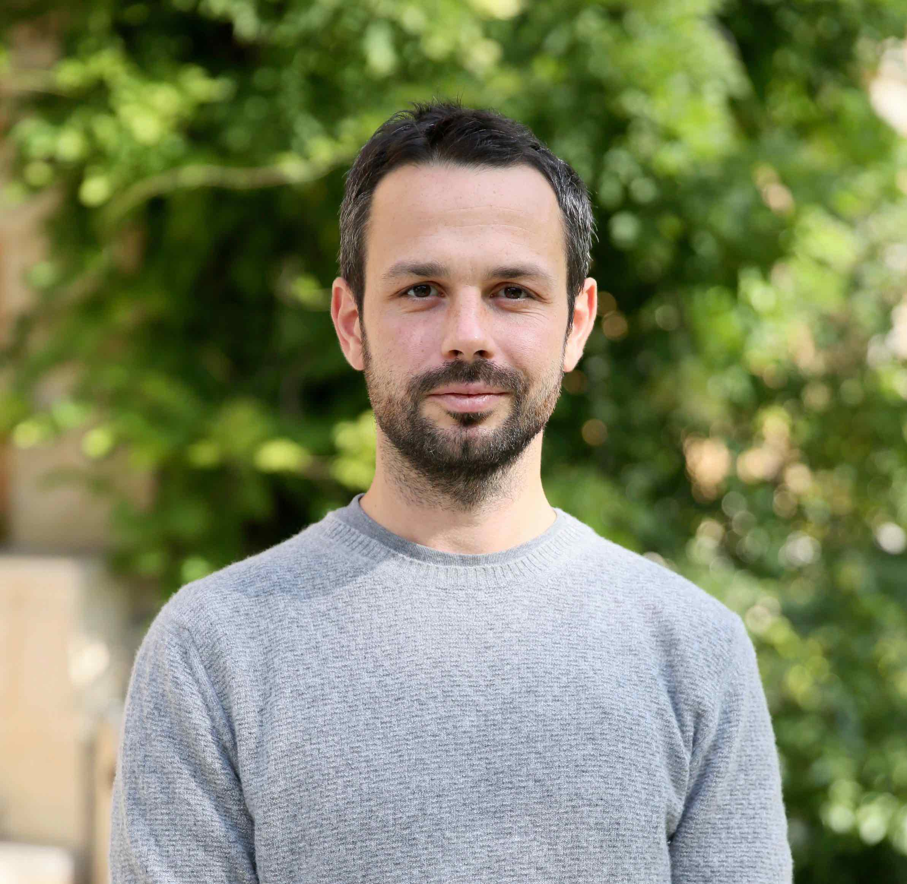

Authors
The creation of this text book was developed through a series of summer schools run by the SPAAM community, and financially supported by the Werner Siemens-Stiftung. The have contributed to the development of this textbook. Contributors to the textbook are listed below.
| 2022-2025 | 🇬🇧 James Fellows Yates is an archaeology-trained biomolecular archaeologist and convert to palaeogenomics, and is recently pivoting to bioinformatics. He specialises in ancient metagenomics analysis, generating tools and high-throughput approaches and high-quality pipelines for validating and analysing ancient (oral) microbiomes and palaeogenomic data. | |
| 2022-2025 | 🇺🇸 Christina Warinner is Group Leader of Microbiome Sciences at the Max Planck Institute for Evolutionary Anthropology in Leipzig, Germany, and Associate Professor of Anthropology at Harvard University. She serves on the Leadership Team of the Max Planck-Harvard Research Center for the Archaeoscience of the Ancient Mediterranean (MHAAM), and is a Professor in the Faculty of Biological Sciences at Friedrich Schiller University in Jena, Germany. Her research focuses on the use of metagenomics and paleoproteomics to better understand past human diet, health, and the evolution of the human microbiome. | |
| 2022-2025 |  | 🇪🇸 Aida Andrades Valtueña is a geneticist interested in pathogen evolution, with particular interest in prehistoric pathogens. She has been exploring new methods to analyse ancient pathogen data to understand their past function and ecology to inform models of pathogen emergence. |
| 2022-2025 | 🇩🇪 Alexander Herbig is a bioinformatician and group leader for Computational Pathogenomics at the Max Planck Institute for Evolutionary Anthropology. His main interest is in studying the evolution of human pathogens and in methods development for pathogen detection and bacterial genomics. | |
| 2022-2025 | 🇩🇪 Alex Hübner is a computational biologist, who originally studied biotechnology, before switching to evolutionary biology during his PhD. For his postdoc in the Warinner lab, he focuses on investigating whether new methods in the field of modern metagenomics can be directly applied to ancient DNA data. Here, he is particularly interested in the de novo assembly of ancient metagenomic sequencing data and the subsequent analysis of its results. | |
| 2022-2025 | 🇩🇪 Clemens Schmid is a computational archaeologist pursuing a PhD in the group of Stephan Schiffels at the department of Archaeogenetics at the Max Planck Institute for Evolutionary Anthropology. He is trained both in archaeology and computer science and currently develops computational methods for the spatiotemporal co-analysis of archaeological and ancient genomic data. He worked in research projects on the European Neolithic, Copper and Bronze age and maintains research software in R, C++ and Haskell. | |
| 2022-2025 |  | 🇷🇺 Nikolay Oskolkov is a bioinformatician at Lund University and the bioinformatics platform of SciLifeLab, Sweden. He defended his PhD in theoretical physics in 2007, and switched to life sciences in 2012. His research interests include mathematical statistics and machine learning applied to genetics and genomics, single cell and ancient metagenomics data analysis. |
| 2022-2025 | 🇬🇷 Thiseas Lamnidis is a human population geneticist interested in European population history after the Bronze Age. To gain the required resolution to differentiate between Iron Age European populations, he is developing analytical methods based on the sharing of rare variation between individuals. He has also contributed to pipelines that streamline the processing and analysis of genetic data in a reproducible manner, while also facilitating dissemination of information among interdisciplinary colleagues. | |
| 2023-2025 | 🇦🇹 Meriam Guellil is an expert in ancient microbial phylogenomics and metagenomics, particularly of human pathogens. She is particularly interested in the study of diseases that are invisible in the archaeological and osteological record, and the study of their evolution throughout human history. Her previous research includes studies on microbial species such as Yersinia pestis, Haemophilus influenzae, Borrelia recurrentis and Herpes simplex 1. | |
| 2024-2025 |  | 🇮🇹 Giulia Zampirolo is a postdoctoral researcher specialised in ancient metagenomics, with a background in both archaeology and paleogenomics. During her PhD at the Centre for GeoGenetics (University of Copenhagen), she utilised sedimentary ancient DNA across different types of deposits to investigate past human-environment interactions. Currently based at the Globe Institute, University of Copenhagen, she works in Kristine Bohmann’s research group, contributing to the project SEACHANGE, which explores the evolution of past marine ecosystems and biodiversity. Her research interests lie in the interdisciplinary intersection of archaeology, ancient DNA, and ecology to trace human-induced environmental changes over time. |
| 2024-2025 |  | 🇩🇪 Tessa Zeibig is a trained Microbiologist, she’s currently pursuing her PhD in the Computational Pathogenomics Group led by Alexander Herbig at the Max Planck Institute for Evolutionary Anthropology. Her focus is on human viruses, seeking to understand their evolution and development, using ancient genomic data. |
| 2024-2025 | 🇨🇱 Vilma Pérez is a microbial ecologist at the Australian Centre for Ancient DNA, University of Adelaide. Her research focuses on reconstructing microbial communities from present and past environments using environmental DNA techniques. Her objective is to use this information as bioindicators, providing insights into how environments have changed or responded to disturbances over time. | |
| 2022, 2025 |  |
🇺🇸 Megan Michel is a PhD student jointly affiliated with the Archaeogenetics Department at the Max Planck Institute for Evolutionary Anthropology and the Human Evolutionary Biology Department at Harvard University. Her research focuses on using computational genomic analyses to understand how pathogens have co-evolved with their hosts over the course of human history. |
| 2025 | ) | 🇫🇷 Rémi Denise is a postdoctoral researcher in bioinformatics at APC Microbiome Ireland, University College Cork. During his PhD he studied the evolution of the type IV filaments in Bacteria and Archaea using phylogenomics to understand how this family evolved in multiple different systems. He secured a MSCA Postdoctoral Fellowship to study the viral diversity in the ancient metagenomes and how this viral population interacts with the environment and helps shape the microbial community. |
| 2024 | 🇵🇱🇩🇰 Aleksandra Laura Pach is a bioinformatician currently working on a PhD at the Schroeder and Racimo groups at section for Ecology and Evolution, Globe institute, University of Copenhagen. Her research centers around ancient metagenomics specifically focusing on inference of eukaryotes and methodologies. | |
| 2023-2024 | 🇳🇱 Kevin Nota has a PhD in molecular paleoecology from Uppsala University. Currently he is a postdoc in the Max Planck Research Group for Ancient Environmental Genomics. His main research interest is in population genomics from ancient environmental samples. | |
| 2022-2024 |  | 🇫🇷 Arthur Kocher initially trained as a veterinarian. He then pursued a PhD in the field of disease ecology, during which he studied the impact of biodiversity changes on the transmission of zoonotic diseases using molecular tools such as DNA metabarcoding. During his Post-Docs, he extended his research focus to evolutionary aspects of pathogens, which he currently investigates using ancient genomic data and Bayesian phylogenetics. |
| 2022-2024 | 🇫🇷 Maxime Borry is a doctoral researcher in bioinformatics at the Max Planck Institute for Evolutionary Anthropology in Germany. After an undergraduate in life sciences and a master in Ecology, followed by a master in bioinformatics, he is now working on the completion of his PhD, focused on developing new tools and data analysis of ancient metagenomic samples. | |
| 2022-2023 | 🇩🇪 Alina Hiss is a PhD student in the Computational Pathogenomics group at the Max Planck Institute for Evolutionary Anthropology. She is interested in the evolution of human pathogens and working on material from the Carpathian basin to gain insights about the presence and spread of pathogens in the region during the Early Medieval period. | |
| 2023 |  |
🇩🇪 Robin Warner is a MSc bioinformatics student at the Leipzig University. He is currently writing his master’s thesis in the Max Planck Research Group for Ancient Environmental Genomics about the comparison of ancient sedimentary DNA capture methods and shotgun sequencing. |
| 2022 | 🇺🇸 Irina Velsko is a postdoc in the Microbiome group of the department of Archaeogenetics at the Max Planck Institute for Evolutionary Anthropology. She did her PhD work on oral microbiology and immunology of the living, and now works on oral microbiomes of the living and the dead. Her work focuses on the evolution and ecology of dental plaque biofilms, both modern and ancient, and the complex interplay between microbiomes and their hosts. |